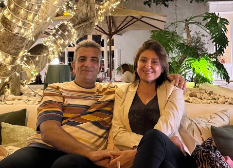

Les voyageursUne visite guidée des trois lieux envisagés : Nai Yang à Phuket, Ao Nang à Krabi et Khao Lak dans la province de Phang Nga. Tout ce qui est écrit ici vient de fiches consultées le 24 septembre 2026 ; ce qui n'a pas pu être vérifié est signalé.
Un second aperçu des hôtels et vols pour ce lieu, actualisé en direct depuis nos données en ligne. Vient en plus des fiches ci-dessous, sans jamais les remplacer.
Lecture en direct des tables hotels et vols de la base Cloudflare D1 venom-xbmc-addons-db, via le connecteur « Cloudflare Developer Platform » de ton compte claude.ai. Lecture seule. La date affichée après une actualisation est celle de cette lecture, pas la date à laquelle l'offre a été consultée chez le fournisseur (Booking/Trivago) : compare toujours les deux avant de rapprocher une ligne.